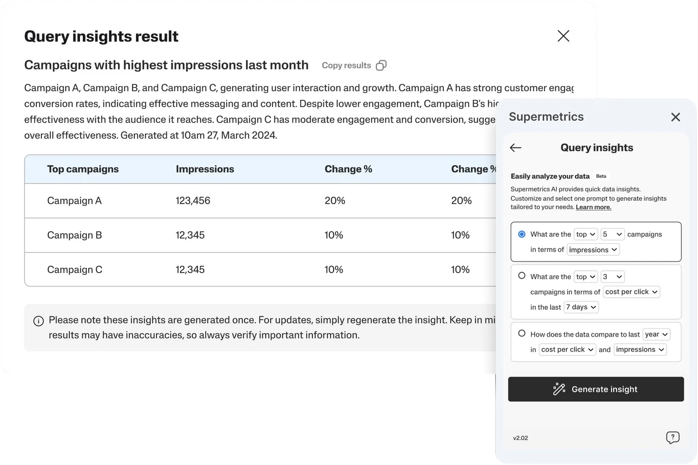
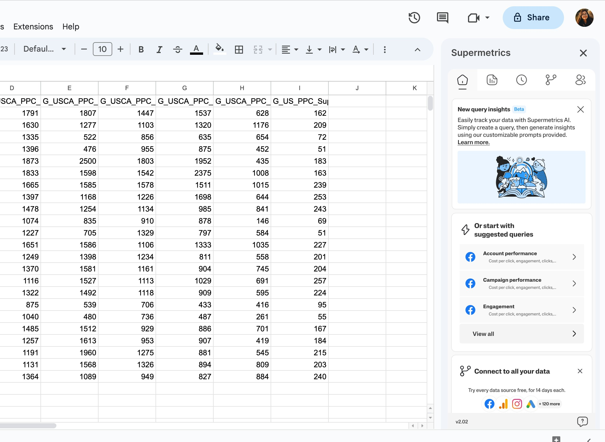
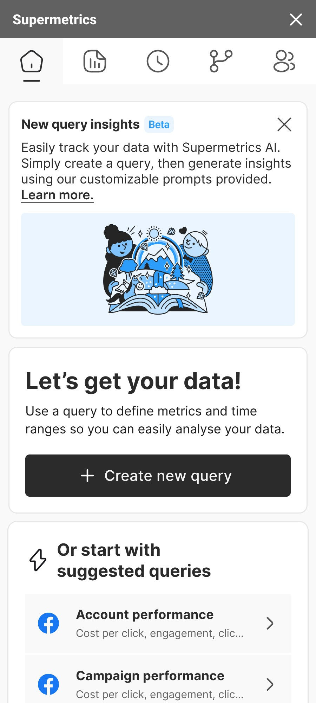
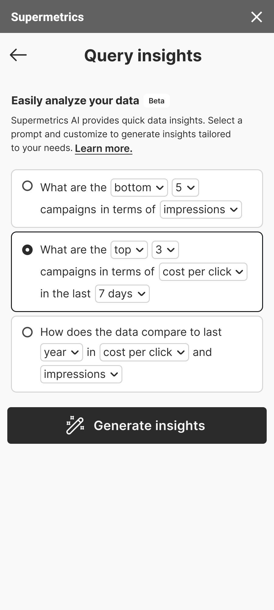
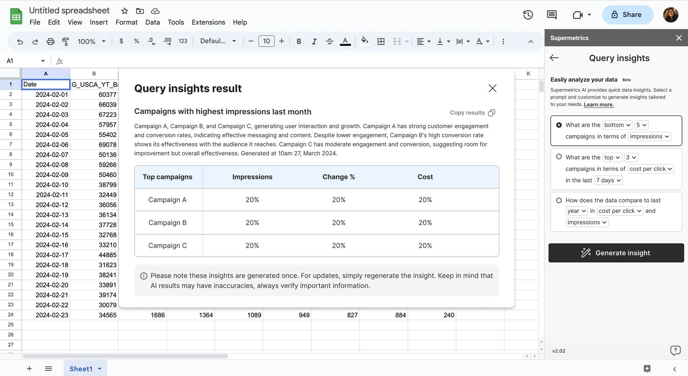
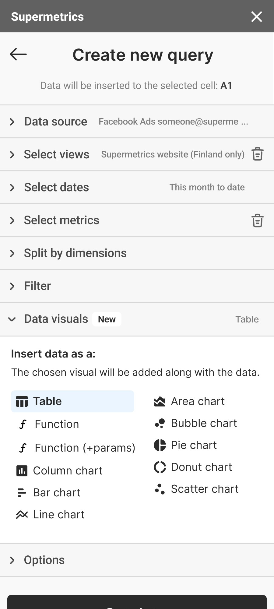
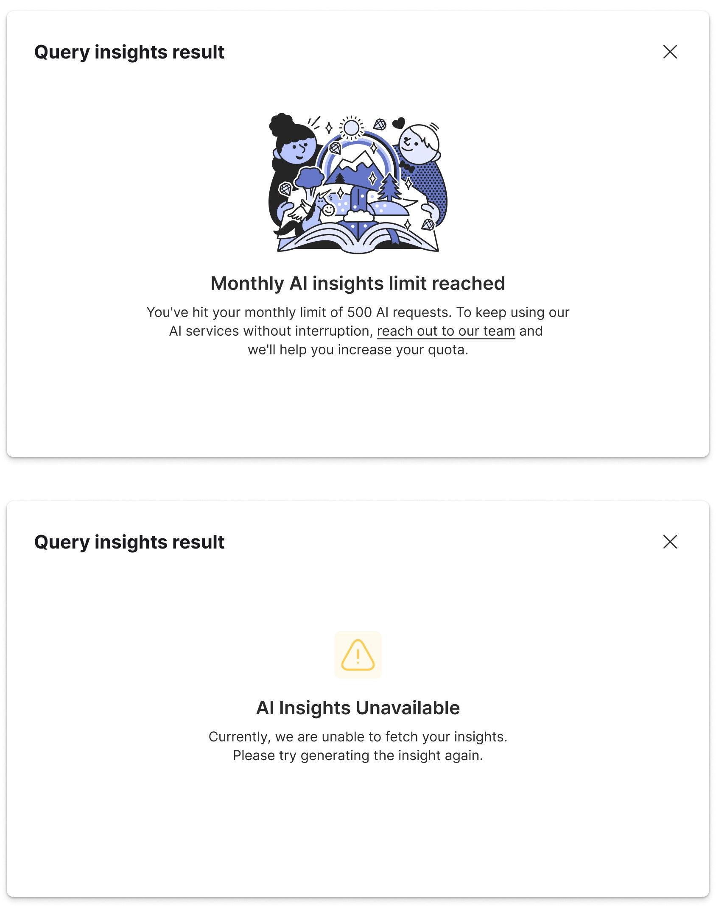

Supermetrics · AI-powered retention · 2023
AI-powered query insights for better activation
A generative AI feature that turns a customer's data into a clear written summary, right where they are already working.
Context
Supermetrics brings marketing data into the reporting tools teams already use. Many customers have no data team and little time to make sense of it.
Impact
AI insights lifted retention by 14%.
0%
improvement in retention
The problem
Teams without analysts could not turn raw data into answers fast enough.
They needed insight they could act on and share, without an analyst.
Marketer without an analyst
Has the data but not the time or analyst to make sense of it.
- Turn query results into insight
- Share findings in their reports
- Stay in the tool they already use
- Making sense of raw data alone
- Switching tools to analyse it

The solution
Insights appear right where the data already is.
Insights appear next to the query, with no context switching, and a summary drops straight into a report.



Outcome
Customers stayed longer and got value sooner.
- Better retention, up 14%
- Higher user satisfaction
- Quicker time to value


Reflections
Where the insight lands matters more than the model.
A summary only helps if it sits next to the data and travels into the report.
- Designing edge states early, like usage limits, kept trust when the AI could not answer
- Prompt templates helped people who did not know what to ask
- Next, I would track how often summaries reach reports, to see which prompts earn their place